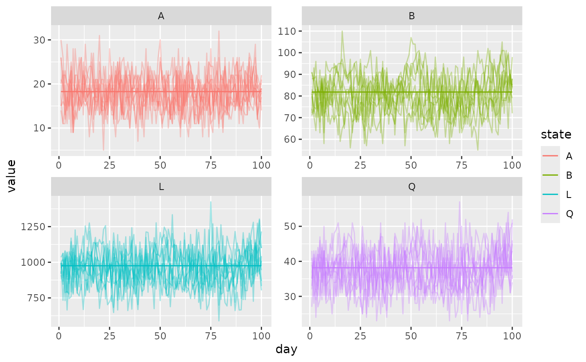

The simple behavioral state mosquito model has two behavioral states which mosquitoes can exist in: blood feeding (\(B\)) and oviposition (\(Q\)). When mosquitoes are in \(B\) they will attempt to blood feed until they are successful, at which point they transition to \(Q\) and attempt to oviposit an egg batch. Upon emergence, mosquitoes are primed for blood feeding and are in \(B\). They transition between these states until they die, which occurs according to the state dependent probabilities \(p_{B}\) and \(p_{Q}\) (these may also vary by location and time). The model does not consider male mosquitoes.
The model also considers infection. Uninfected (susceptible) mosquitoes \(M\) may become infected if they are in \(B\), successfully take a blood meal, and are infected (with probability \(\kappa\)). They then transition to the infected class \(Y\), in behavioral state \(Q\). The extrinsic incubation period (EIP) may vary with time, and they advance until they become infectious (if they survive), where they remain until death. Both dynamics operate simultaneously.
Deterministic model
The deterministic behavioral state model has the following form:
\[\begin{equation} \left[ \begin{array}{cc} B_{t+1} \\ Q_{t+1} \\ \end{array} \right] = \left[ \begin{array}{ccc} (1 - \psi_b) \Psi_{b b} & \psi_q \Psi_{q b} \\ \psi_b \Psi_{b q} & (1 - \psi_q) \Psi_{q q} \\ \end{array} \right] \left[ \begin{array}{cc} p_b B_{t} \\ p_q Q_{t} \\ \end{array} \right] + \left[ \begin{array}{c} \Lambda_{t} \\ 0 \\ \end{array} \right] \end{equation}\]
The state is a column vector \(\left[\begin{array}{cc} B \\ Q \\ \end{array}\right]\). We assume that there are \(p\) locations where mosquitoes go to seek blood hosts, so that the first \(p\) elements correspond to the number of mosquitoes in the \(B\) state at those places. There are \(l\) locations where mosquitoes go to oviposit (aquatic habitats), so the last \(l\) elements in the vector are mosquitoes in the \(Q\) state. There is no requirement that the set of points where mosquitoes blood feed and oviposit be distinct, although they may be.
The infection states are similar to the Ross-Macdonald model, see vignette("RM_mosquito") for more details.
The parameters in the state updating equation are:
- \(\psi_b\): probability of successful blood feeding (vector of length \(p\)); this parameter is computed from \(f, q\) (themselves calculated during the bloodmeal algorithm) as \(1-e^{-fq}\).
- \(\psi_q\): probability of successful oviposition (vector of length \(l\)).
- \(\Psi_{b b}\): transition probability matrix for movement among blood feeding haunts. It has dimension \(p\times p\), and has columns that sum to 1 (note state vectors are on the right).
- \(\Psi_{q b}\): transition probabilty matrix for movement from aquatic habitats to blood feeding haunts. It has dimension \(p\times l\).
- \(\Psi_{b q}\): transition probabilty matrix for movement from blood feeding haunts to aquatic habitats. It has dimension \(l\times p\).
- \(\Psi_{q q}\): transition probability matrix for movement among aquatic habitats. It has dimension \(l\times l\).
- \(p_{B}\): daily survival probability for blood feeding mosquitoes.
- \(p_{Q}\): daily survival probability for ovipositing mosquitoes.
Stochastic model
The stochastic model has similar updating dynamics to the deterministic implementation, except that all survival and success probabilities are used in binomial draws and movement is drawn from a multinomial distribution.
Simulation
We assume that \(p = l = 1\) and that the total mosquito density \(M = B + Q\) is known, and that we want to solve for the emergence rate \(\Lambda\) such that the system is at equilibrium. Rewriting the equations when we substitute \(Q = M - B\) and \(B = M - Q\) we solve the state variables as:
\[\begin{equation} Q = \frac{Mp_{B}\Psi_{B}}{p_{B}\Psi_{B} - p_{Q}(1-\Psi_{Q}) + 1} \\ B = \frac{M-Mp_{Q}(1-\Psi_{Q})}{p_{B}\Psi_{B} - p_{Q}(1-\Psi_{Q}) + 1} \end{equation}\]
Then the first equation can simply be rearranged to yield:
\[\begin{equation} \Lambda = B - p_{B}(1-\Psi_{B})B - p_{Q}\Psi_{Q}Q \end{equation}\]
And now the model with 1 point of each type can be set up at equilibrium. We will use the Beverton-Holt model of aquatic ecology demonstrated in vignette("BH_aqua"), which will be parameterized to provide the correct equilibrium \(\Lambda\).
p <- l <- 1
tmax <- 1e2
M <- 120
pB <- 0.8
pQ <- 0.95
PsiB <- 0.5
PsiQ <- 0.85
B <- (M - (M*pQ*(1-PsiQ))) / ((pB*PsiB) - (pQ*(1-PsiQ)) + 1)
Q <- (M*pB*PsiB) / ((pB*PsiB) - (pQ*(1-PsiQ)) + 1)
lambda <- B - (pB*(1-PsiB)*B) - (pQ*PsiQ*Q)
nu <- 25
eggs <- nu * PsiQ * Q
# static pars
molt <- 0.1
surv <- 0.9
# solve L
L <- lambda * ((1/molt) - 1) + eggs
K <- - (lambda * L) / (lambda - L*molt*surv)Let’s set up the model. We use make_MicroMoB() to set up the base model object, and setup_aqua_BH() for the Beverton-Holt aquatic model with our chosen parameters. setup_mosquito_BQ() will set up a behavioral state model of adult mosquito dynamics.
We run a deterministic simulation and store output in a matrix. Note that we calculate the f and q parameters to achieve the correct PsiB probability; normally these would be updated dynamically during the bloodmeal but we are running a mosquito-only simulation so we set these deterministically.
# deterministic run
mod <- make_MicroMoB(tmax = tmax, p = p, l = l)
setup_aqua_BH(model = mod, stochastic = FALSE, molt = molt, surv = surv, K = K, L = L)
setup_mosquito_BQ(model = mod, stochastic = FALSE, eip = 5, pB = pB, pQ = pQ, psiQ = PsiQ, Psi_bb = matrix(1), Psi_bq = matrix(1), Psi_qb = matrix(1), Psi_qq = matrix(1), nu = nu, M = c(B, Q), Y = matrix(0, nrow = 2, ncol = 6))
out_det <- matrix(data = NaN, nrow = tmax + 1, ncol = 4)
out_det[1L, ] <- c(mod$aqua$L, mod$aqua$A, mod$mosquito$M)
mod$mosquito$q <- 0.3
mod$mosquito$f <- log(1 - PsiB) / -0.3
while (mod$global$tnow <= tmax) {
step_aqua(model = mod)
step_mosquitoes(model = mod)
out_det[mod$global$tnow + 1L, ] <- c(mod$aqua$L, mod$aqua$A, mod$mosquito$M)
mod$global$tnow <- mod$global$tnow + 1L
}Now we run the same model, but using the option stochastic = TRUE for our dynamics, and draw 10 trajectories.
# stochastic runs
out_sto <- mclapply(X = 1:10, FUN = function(runid) {
mod <- make_MicroMoB(tmax = tmax, p = p, l = l)
setup_aqua_BH(model = mod, stochastic = TRUE, molt = molt, surv = surv, K = K, L = L)
setup_mosquito_BQ(model = mod, stochastic = TRUE, eip = 5, pB = pB, pQ = pQ, psiQ = PsiQ, Psi_bb = matrix(1), Psi_bq = matrix(1), Psi_qb = matrix(1), Psi_qq = matrix(1), nu = nu, M = c(B, Q), Y = matrix(0, nrow = 2, ncol = 6))
out_run <- matrix(data = NaN, nrow = tmax + 1, ncol = 4)
out_run[1L, ] <- c(mod$aqua$L, mod$aqua$A, mod$mosquito$M)
mod$mosquito$q <- 0.3
mod$mosquito$f <- log(1 - PsiB) / -0.3
while (mod$global$tnow <= tmax) {
step_aqua(model = mod)
step_mosquitoes(model = mod)
out_run[mod$global$tnow + 1L, ] <- c(mod$aqua$L, mod$aqua$A, mod$mosquito$M)
mod$global$tnow <- mod$global$tnow + 1L
}
out_run <- as.data.frame(out_run)
out_run$run <- as.integer(runid)
return(out_run)
})Now we process the output and plot the results. Deterministic solutions are solid lines and each stochastic trajectory is a faint line.
out_det <- as.data.table(out_det)
out_det[, "Day" := 0:tmax]
out_det <- melt(out_det, id.vars = "Day", variable.name = "Stage", value.name = "Count")
levels(out_det$Stage) <- c("L", "A", "B", "Q")
out_sto <- do.call(rbind, out_sto)
out_sto <- as.data.table(out_sto)
out_sto <- melt(out_sto, id.vars = "run", variable.name = "Stage", value.name = "Count")
out_sto[, "Day" := 0:tmax, by = c("run", "Stage")]
levels(out_sto$Stage) <- c("L", "A", "B", "Q")
ggplot(data = out_sto) +
geom_line(aes(x = Day, y = Count, color = Stage, group = run), alpha = 0.35) +
geom_line(data = out_det, mapping = aes(x = Day, y = Count, color = Stage)) +
facet_wrap(. ~ Stage, scales = "free")